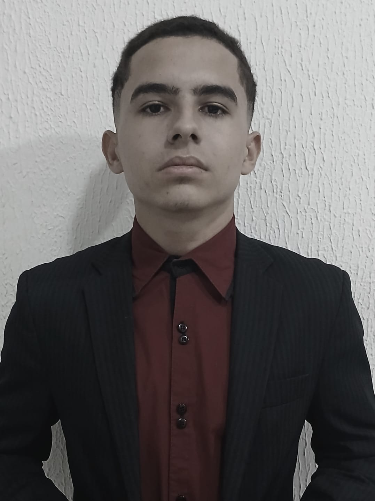

Futuro Desenvolvedor Full-Stack
Prazer, eu sou
Alisson Sousa
Códigos robustos surgem de mentes tranquilas.

Códigos robustos surgem de mentes tranquilas.
Sou um desenvolvedor que curte criar coisas na prática. Trabalho com Python,
Java, HTML, CSS, JavaScript e SQL — e tô sempre buscando evoluir a cada projeto.
Gosto de fazer sites e sistemas rápidos, bonitos e funcionais, daquele jeito
que a pessoa usa e pensa: 'caramba, ficou massa'.
Entrei na programação porque sempre curti esse mundo de lógica, criatividade e solução de problemas.
Acho incrível como algumas linhas de código podem virar algo real na tela. Quando pego um projeto,
gosto de testar, ajustar, refatorar e caprichar tanto no visual quanto na estrutura interna,
sempre buscando deixar tudo o mais limpo, organizado e funcional possível.
A sensação de ver um sistema funcionando do jeitinho que imaginei é o que me motiva a continuar.
Ainda tô evoluindo e aprendendo novas ferramentas, frameworks e formas de pensar código, mas já tenho
segurança trabalhando tanto no front quanto no back. Curto conectar essas duas partes para entregar algo
completo, fluido e com uma experiência bem construída. Meu objetivo é continuar ampliando meus conhecimentos,
ganhando experiência em projetos reais e me tornando um desenvolvedor cada vez mais preparado para criar
soluções que realmente façam diferença.
| Habilidade | Proficiência | Tempo |
|---|---|---|
| Python | Intermediário | 1 ano |
| MySQL | Intermediário | 8 meses |
| Java | Intermediário | 6 meses |
| HTML / CSS | Intermediário | 8 meses |
| C++ | Intermediário | 6 meses |
| GitHub | Intermediário | 1 ano |

Este projeto consiste na criação de um protótipo de um site empresarial para a empresa fictícia Nerdware.
A Nerdware é uma loja especializada em produtos e equipamentos de informática, oferecendo peças de computador, periféricos, notebooks e diversos acessórios tecnológicos.
Desenvolvimento de um sistema de semáforo utilizando Arduino.
Projeto focado em lógica de controle e funcionamento de sistemas embarcados, utilizando C++ para programação do microcontrolador.